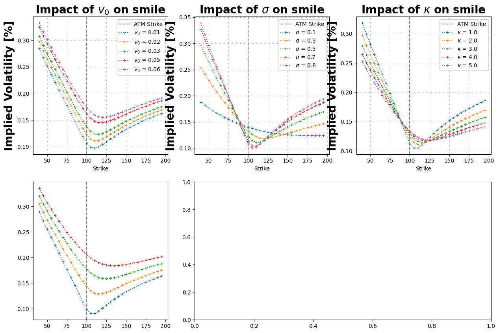

Impact of parameters#
[3]:
from hestonpy.models.heston import Heston
from hestonpy.models.calibration.volatilitySmile import VolatilitySmile, fontdict
import numpy as np
import pandas as pd
import matplotlib.pyplot as plt
import matplotlib.gridspec as gridspec
What is the impact of each parameters on the calibrated smile ?
[4]:
# Paramètres initiaux du modèle Heston
spot = 100 # Prix spot
vol_initial = 0.02 # Variance initiale
r = 0.00
params = {
"kappa": 1.25,
"theta": 0.06,
"drift_emm": 0.00,
"sigma": 0.6,
"rho": -0.8,
}
time_to_maturity = 1
model = Heston(spot, vol_initial, r, **params)
strikes = np.arange(40, 200, 10)
prices = model.call_price(strike=strikes, time_to_maturity=time_to_maturity)
smile = VolatilitySmile(strikes=strikes, time_to_maturity=1, atm=spot, market_prices=prices)
smile.plot()

[5]:
# Paramètres de base du modèle Heston
base_params = {
"vol_initial": 0.02, # Variance initiale
"kappa": 2.0, # Vitesse de réversion
"theta": 0.02, # Variance à long terme
"sigma": 0.5, # Volatilité de la variance
"rho": -0.5, # Corrélation
}
# Définition des paramètres à tester
params_to_test = {
"vol_initial": [0.01, 0.02, 0.03, 0.05, 0.06],
"sigma": [0.1, 0.3, 0.5, 0.7, 0.8],
"kappa": [1.0, 2.0, 3.0, 4.0, 5.0],
"theta": [0.01, 0.03, 0.05, 0.07, 0.10],
"rho": [-0.5, -0.15, 0, 0.15, 0.5],
}
# Dictionnaire pour convertir les noms en LaTex
latex_labels = {
"vol_initial": r"$v_0$",
"sigma": r"$\sigma$",
"kappa": r"$\kappa$",
"theta": r"$\theta$",
"rho": r"$\rho$",
}
strikes = np.arange(40, 200, 5)
fig = plt.figure(figsize=(15, 10))
gs = gridspec.GridSpec(2, 3, figure=fig)
axes = [fig.add_subplot(gs[0, i]) for i in range(3)] # Première ligne
axes.append(fig.add_subplot(gs[1, 0])) # En bas à gauche
axes.append(fig.add_subplot(gs[1, 1:])) # Fusion des deux derniers
# Fonction pour tracer les volatility smiles
def plot_vol_smile(ax, param_name, param_values):
ax.axvline(spot, linestyle="--", color="gray", label="ATM Strike")
for value in param_values:
params = base_params.copy()
params[param_name] = value
model = Heston(spot=spot, r=r, drift_emm=0, **params)
prices = model.call_price(strike=strikes, time_to_maturity=1)
smile = VolatilitySmile(strikes=strikes, atm=spot, market_prices=prices, time_to_maturity=1)
implied_vols = smile.compute_smile(prices)
ax.plot(strikes, implied_vols, label=f'{latex_labels[param_name]} = {value}', marker='+', linestyle="dotted", markersize=4)
ax.set_title(f"Impact of {latex_labels[param_name]} on smile", fontdict=fontdict)
ax.set_xlabel("Strike")
ax.set_ylabel("Implied Volatility [%]", fontdict=fontdict)
ax.grid(visible=True, which="major", linestyle="--", dashes=(5, 10), color="gray", linewidth=0.5, alpha=0.8)
ax.legend()
# Tracer les courbes sur chaque subplot
for i, (param_name, param_values) in enumerate(params_to_test.items()):
plot_vol_smile(axes[i], param_name, param_values)
plt.tight_layout()
plt.show()
---------------------------------------------------------------------------
KeyboardInterrupt Traceback (most recent call last)
Cell In[5], line 61
59 # Tracer les courbes sur chaque subplot
60 for i, (param_name, param_values) in enumerate(params_to_test.items()):
---> 61 plot_vol_smile(axes[i], param_name, param_values)
63 plt.tight_layout()
64 plt.show()
Cell In[5], line 48, in plot_vol_smile(ax, param_name, param_values)
46 model = Heston(spot=spot, r=r, drift_emm=0, **params)
47 prices = model.call_price(strike=strikes, time_to_maturity=1)
---> 48 smile = VolatilitySmile(strikes=strikes, atm=spot, market_prices=prices, time_to_maturity=1)
49 implied_vols = smile.compute_smile(prices)
51 ax.plot(strikes, implied_vols, label=f'{latex_labels[param_name]} = {value}', marker='+', linestyle="dotted", markersize=4)
File ~/Documents/packages/hestonpy/src/hestonpy/models/calibration/volatilitySmile.py:80, in VolatilitySmile.__init__(self, strikes, time_to_maturity, atm, market_prices, market_ivs, r)
78 self.market_prices = self.reverse_smile()
79 if market_ivs is None:
---> 80 self.market_ivs = self.compute_smile()
File ~/Documents/packages/hestonpy/src/hestonpy/models/calibration/volatilitySmile.py:115, in VolatilitySmile.compute_smile(self, prices, strikes)
112 strikes = self.strikes
114 bs = BlackScholes(spot=self.atm, r=self.r, mu=self.r, volatility=0.02)
--> 115 smile = compute_smile(
116 prices=prices,
117 strikes=strikes,
118 time_to_maturity=self.time_to_maturity,
119 bs=bs,
120 flag_option="call",
121 method="dichotomie",
122 )
123 return smile
File ~/Documents/packages/hestonpy/src/hestonpy/models/calibration/_utils.py:98, in compute_smile(prices, strikes, time_to_maturity, bs, flag_option, method)
96 ivs = []
97 for (price, strike) in zip(prices, strikes):
---> 98 iv = reverse_blackScholes(
99 price=price,
100 strike=strike,
101 bs=bs,
102 time_to_maturity=time_to_maturity,
103 flag_option='call',
104 method=method
105 )
106 ivs.append(iv)
108 return np.array(ivs)
File ~/Documents/packages/hestonpy/src/hestonpy/models/calibration/_utils.py:79, in reverse_blackScholes(price, strike, time_to_maturity, bs, flag_option, method)
76 vega_function = lambda volatility: bs.vega(strike=strike, time_to_maturity=time_to_maturity, volatility=volatility)
78 if method == 'dichotomie':
---> 79 iv = dichotomie(market_price=price, price_function=bs_price)
80 elif method == 'newton_raphson':
81 iv = newton_raphson(market_price=price, price_function=bs_price, vega_function=vega_function)
File ~/Documents/packages/hestonpy/src/hestonpy/models/calibration/_utils.py:24, in dichotomie(market_price, price_function, error, vol_inf, vol_sup)
22 while vol_sup - vol_inf > error:
23 vol_mid = (vol_inf + vol_sup)/2
---> 24 if target_function(vol_inf) * target_function(vol_mid) < 0:
25 vol_sup = vol_mid
26 else:
File ~/Documents/packages/hestonpy/src/hestonpy/models/calibration/_utils.py:20, in dichotomie.<locals>.<lambda>(volatility)
9 def dichotomie(
10 market_price,
11 price_function,
(...)
14 vol_sup: float = 1
15 ):
16 """
17 price_function should be only a function of the volatility
18 Note that the price_function is always a croissant function of the volatility
19 """
---> 20 target_function = lambda volatility: price_function(volatility) - market_price
22 while vol_sup - vol_inf > error:
23 vol_mid = (vol_inf + vol_sup)/2
File ~/Documents/packages/hestonpy/src/hestonpy/models/calibration/_utils.py:72, in reverse_blackScholes.<locals>.<lambda>(volatility)
67 """
68 Reverse the Black-Scholes formula, compute the implied volatility from market price.
69 bs should be already initialized with the right strike and maturity.
70 """
71 if flag_option == 'call':
---> 72 bs_price = lambda volatility: bs.call_price(strike=strike, time_to_maturity=time_to_maturity, volatility=volatility)
73 else:
74 bs_price = lambda volatility: bs.put_price(strike=strike, time_to_maturity=time_to_maturity, volatility=volatility)
File ~/Documents/packages/hestonpy/src/hestonpy/models/blackScholes.py:144, in BlackScholes.call_price(self, strike, time_to_maturity, spot, r, volatility)
140 d1 = (np.log(spot / strike) + (r + 0.5 * volatility**2) * time_to_maturity) / (
141 volatility * np.sqrt(time_to_maturity)
142 )
143 d2 = d1 - volatility * np.sqrt(time_to_maturity)
--> 144 return spot * norm.cdf(d1) - strike * np.exp(-r * time_to_maturity) * norm.cdf(d2)
145 else:
146 return np.maximum(0, spot-strike)
File ~/Documents/packages/hestonpy/.venv/lib/python3.10/site-packages/scipy/stats/_distn_infrastructure.py:2137, in rv_continuous.cdf(self, x, *args, **kwds)
2135 place(output, (1-cond0)+np.isnan(x), self.badvalue)
2136 place(output, cond2, 1.0)
-> 2137 if np.any(cond): # call only if at least 1 entry
2138 goodargs = argsreduce(cond, *((x,)+args))
2139 place(output, cond, self._cdf(*goodargs))
File ~/Documents/packages/hestonpy/.venv/lib/python3.10/site-packages/numpy/_core/fromnumeric.py:2580, in any(a, axis, out, keepdims, where)
2477 @array_function_dispatch(_any_dispatcher)
2478 def any(a, axis=None, out=None, keepdims=np._NoValue, *, where=np._NoValue):
2479 """
2480 Test whether any array element along a given axis evaluates to True.
2481
(...)
2578
2579 """
-> 2580 return _wrapreduction_any_all(a, np.logical_or, 'any', axis, out,
2581 keepdims=keepdims, where=where)
File ~/Documents/packages/hestonpy/.venv/lib/python3.10/site-packages/numpy/_core/fromnumeric.py:100, in _wrapreduction_any_all(obj, ufunc, method, axis, out, **kwargs)
98 pass
99 else:
--> 100 return reduction(axis=axis, out=out, **passkwargs)
102 return ufunc.reduce(obj, axis, bool, out, **passkwargs)
File ~/Documents/packages/hestonpy/.venv/lib/python3.10/site-packages/numpy/_core/_methods.py:64, in _any(a, axis, dtype, out, keepdims, where)
62 # Parsing keyword arguments is currently fairly slow, so avoid it for now
63 if where is True:
---> 64 return umr_any(a, axis, dtype, out, keepdims)
65 return umr_any(a, axis, dtype, out, keepdims, where=where)
KeyboardInterrupt:
